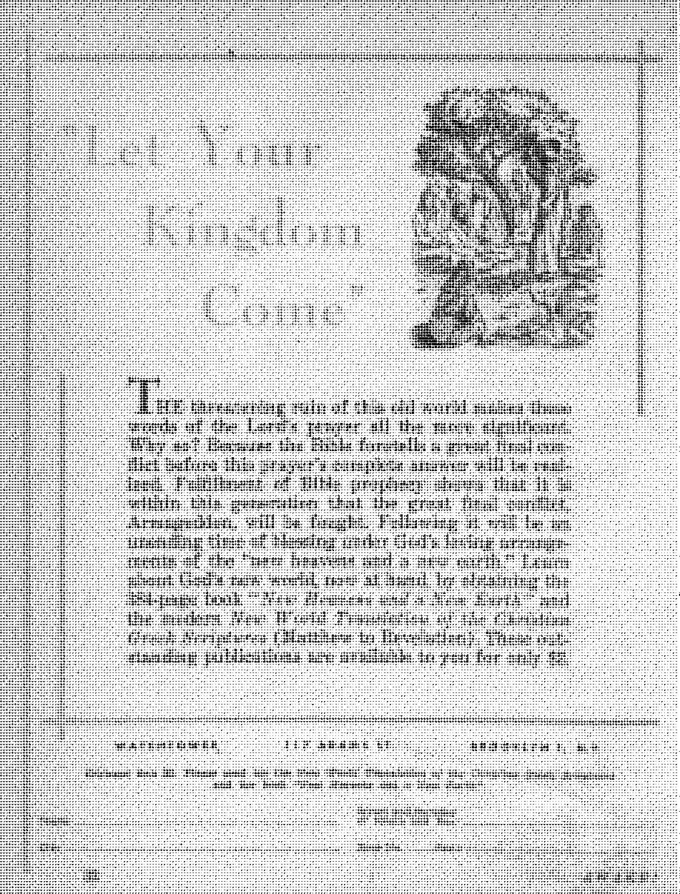

CAN PERSONS NOW LIVING NEVER DIE OFF EARTH?
< in Sih: he refined?
The Passing of Getiilio Vargas
The Canada Goose
—Noble Pilgrim of the Skies
An Ear for God’s Word
THE MISSION OF THIS JOURNAL
News source* that are able to keep you awake to the vital issues or our times must be unfettered by censorship and selfish IntereetB. “Awake 1" has no fetters. It recognizes facts, faces facts, is free to publish facts. It is not bound by political ambitions or obligations; it is unhampered by advertisers whose toes must not be trodden on; it is unprejudiced by traditional creeds. This Journal keeps itself free that it may speak freely to you. But it does not abuse its freedom, li maintains integrity to truth.
°Awake I” uses the regular news channels, but is not dependent on them. Its own correspondents are on all continents* in scores of nations. From the four corners of the earth their uncensored, on-the-scenes reports coma to you through these columns. This journal‘b viewpoint is not narrow, but is international. It is read in many nations, in many languages, by persons of all ages. Through its pages many fields or knowledge pass in review—government, commerce* religion, history, geography( science, social conditions, natural wonders—why, its coverage Is as broad as the earth and as high as the heavens.
“Awake I” pledges itself to righteous principles, to exposing hidden foes and subtle dangers, to championing freedom for all* to comforting mourners and strengthening those disheartened by the failures of a delinquent world, reflecting sure hope for the establishment of a right-eous New World.
Get acquainted with “Awake!” Keep awake by reading “Awake!”
Published Semimonthly Dy watchtower BIBLE AND TRACT SOCIETY, INC.
117 Adams Street Brooklyn lt N, Y., U. S, A.
N. H. KnobRj President Sdjtm, Secretary
Printing thh Iseua: 1,250,000
Five cents a copy
Uiimn In whlrt thli NifVlet k Hklhhtf: Semimonthly—Afrikiina, Enclish, Finnish. Frunch, (rttniTitb KaHsndtcA, ft’ortreptn,. Swedish
Monthly—Duibh,, Greek, Fortigutie, UkrdnUiii.
Office* Yuriy subscription Rate
America. U.S.. 117 AdutoSU Brooklyn 1, NX $1 Astral I a, 11 Benoford Rd., Strethfleld, N.S.W. 8e Canada, 40 Irwin Ave., ^ornate \ Ontario $1 EntfaMt 94 Craren Terrace, ff. U 7* SMtfe Afrjj*, Printed, HO, EJjndatateto,,
Ttansnal 7b
PtimittuHt should ba sent to office to your eoun-tijr to rcwpJtoJstfi with regulations to guatintee deJltoy of orccer JtesrttUroor are aeapt«f at Brooklyn from countriei where no office it located, by international money order only. Subscription rates to different countries are here risted to local currency. Native of exalratlM (with renewal blank} is sent at lent two issues before subscription ex-Pires. Cbafifli of addrm when sent to our office roaj be expetted effective within me isjptt. .frond your old as well m new address.
Entered as Mcmd-cIiM matter it Brooklyn, N. T. Act of March 3, 1879. Printed in U. S A
CONTENTS
'Going Beyond What Is Written’
Can Persons Now Living
The Canada Goose—Noble Pilgrim of the Skies
Compromise—Where Does It Lead?
Marian Credulity at Heroldsbach
Predictions That Have Gone Wrong
Asian Conference in Geneva
The Fabulous Dodo Bird
“Your Word Is Truth”
Jehovah’s Witnesses Preach in
“Now it is high time to awoke." 0C 13:11
volume XXXV
Brooklyn, N.Y,, Novembers, 1954
Number 21
itT'YO NOT go beyond the things that I J are written," wrote the apostle of
Christ Jesus. (1 Corinthians 4:6, New World Trans.) In spite of this clear-cut warning, the religions of Christendom today go far beyond the teachings of God’s written Word, the Bible. This is the fashionable trend in religion. It appears "smart” to follow some centuries-old tradition formulated by "early fathers.’’ So Christianity today has largely become a matter of following some church and its teaching rather than the Bible and its teaching. The consequences of this trend have been far-reaching, so far-reaching that this generation is now reaping a grim crop, not the least of which is the Mau Mau terrorist organization in Kenya, Africa.
What—the Mau Mau connected with religion? Yes indeed! For that organization, long thought to be purely political, is now known to be a religion. It has even acquired the title "the true religion of the Kikuyu." Just what kind of religion is it? It is a blend of the original pagan beliefs of the Kikuyu and of many of Christendom’s religious rites. This may sound strange, since the Mau Mau is ostensibly opposed to Christianity. But the Mau Mau leaders were clever. They knew that their potential adherents were to be won from the tens of thousands of nominal Christians, those who were acquainted with all the outward forms of religion but who had never become real believers in it. And of these there were tens of thousands of Kikuyu. True, they had lost faith in their pagan ancestor religion, but the majority became Christians in name only. They became easy targets for the new Mau Mau religion.
An authority on the character of the Kikuyu, Dr. L. S. B. Leakey, writing for Britain’s Manchester Guardian, issue of July 1, 1954, declared: “The failure of so many to accept Christianity in a deep and real sense arose from the fact that the Christian mission churches had not been content to teach only the simple teachings of Christ but had added to them much that was not in the New Testament, but which was the doctrine of the particular mission or Christian sect to which they belonged.”
Thus the failure of so many Kikuyu to accept Christianity “in a deep and real sense” has its roots in this church trend of going beyond what is written in God’s Word. Stressing this very point again, Dr. Leakey explains: “The missionaries who brought Christianity to the Kikuyu tried to lift the people in one big step, not out of the Old Testament into the New, but into twentieth-century Western European Christianity, which embodies much that goes far beyond the teachings of Christ.” (Manchester Guardian, July 8, 1954) Now the missionary coming to convert the Kikuyu from his pagan ways would naturally
preach the rites of his particular sect. Were any of the missionaries aware of the danger of going beyond the teachings of Christ? Says Dr. Leakey: “Some missionaries were aware of the dangers of this, others gave the problem little thought, but all—or nearly all—felt bound to conform to the rules of their Church rather than only to the simple teachings of the New Testament.”
Now the Kikuyu, coming out of his pagan religion into so-called Christianity, was bewildered. Here were elaborate rites, high-sounding titles and mysterious teachings such as the trinity and the use of images. Not only that but there was the inconsistency of the Christian teachers themselves! So one perplexed African, calling himself an “African Christian,” wrote to the Manchester Guardian to express agreement with Dr. Leakey on the reason why the Kikuyu so easily succumbed to Mau Mauism. He then explained: “The African is much too near to nature to be ‘godless,’ but he sees too much inconsistency on the part of his religious mentors to be able to take the religion they propagate very seriously. . . . The African’s god may be of wood and stone, but he is entitled to wonder—and he is now doing so with disconcerting penetration—whether he is expected to bow down unquestioningly before the graven images which some of those who seek to convert him have set up.”—Manchester Guardian, July 15, 1954.
How utterly bewildering it must be for the Kikuyu! He is told to abandon his ed another set of images of stone and wood, only these are labeled “Christian.” From one image to another is hardly progress, and many Kikuyu are awaking to this. The use of images is perplexing to the Kikuyu because it is a practice going beyond what is written, indeed, against what is written: "Seeing, therefore, that we are the progeny of God, we ought not to imagine that the Divine Being is like gold or silver or stone, like something sculptured by the art and contrivance of man.”—Acts 17:29, New World Trans,
The Western nations may find some grim humor in the fact that before Mau Mau adherents go out to bum and massacre they stand and solemnly recite creeds, ,even praying to God to bless what they are about to do. But why ridicule their inconsistency? For Christendom’s priests and ministers themselves, during both world wars, not only blessed their respective nation’s war weapons but also prayed to the same God for victory against one another!
So now Dr. Leakey, in forceful language, raises a challenge to the churches: “Dare they tell their missionaries to put no value on the mere doctrines and teachings of the early fathers, the customs that have grown up as part of British Christianity, but to abide only by the simple teachings of Christ?” (Manchester Guardian, July 8,1954) No, the churches will not consent to admitting that their "doctrines and teachings of the early fathers” are of no value. They fear such a course would lead to a loss of prestige. But which is worse: losing prestige or losing faith?
Even now in the heart of Christendom we have a parallel with the Kikuyu’s leaving Christianity to join the Mau Mau religion. We have thousands of “Christians," especially in such countries as Italy and France, succumbing to the Red religion of communism. And why? Because it is known that the mass of “Christians” in Christendom are such in name only. By the churches’ adding to the Word of God they have spawned this sinister condition and at the same time they have branded themselves as false. (Revelation 22:18) True Christianity does not go beyond the things that are written.
HERE are some who claftn that they would not want to live on earth for*
From the “philosopher’s stone” of the an* cient alchemists, by which they hoped to be able not only to transmute base metals
Without life wo can onfoy nothing. With ova ri noting life are the protpatfi of ovor Fasting happinou. According to God1* Word overtoiling Hfo on earth It a certainty* Not boarveo of tho prog rot* made by medical science but because that it God'* purpose for mankind, and hl> purpose* never fall What follow* give* the Scriptural proof therefor*
ever, that with domestic troubles, disease, wars, taxes and whatnot, life on earth is trialsome, and so it is a good thing that it does not last forever* However, let us hasten to assure all such persons that with everlasting life on earth the Bible also holds out an existence in happiness, free from accidents, strife, sin, disease and death*
Then again there are those who hold that without some troubles life would be unbearably monotonous and that therefore such an everlasting life would not be desirable* But does it take misery to keep life interesting? Are not the many beauties of nature thrilling? Do'not sports furnish excitement to both spectator and participant? Does not achievement of a creative kind, particularly^ the arts, give a keen sense of satisfaction? Truly, in view of the marvelous capacity of man’s brain, endless life promises for man the endless joys of learning of and doing things that are beautiful, interesting and constructive.
The thought of not dying off the earth has fascinated men from oldest times. into gold and silver but also to remove all the seeds of disease out of the human body and renew life indefinitely, to the “fountain'of youth” sought by Ponce de Ledn, men have sought fof* a magic formula or potion making everlasting life possible*
In modern times medical science has sought to increase man’s life span and while figures of progress made in Western lands seem impressive such figures have mostly been the result of eliminating many causes of infant mortality or because of improved sanitary and economic conditions* Moses, some 3,500 years ago, indicated that eighty years was a ripe old age, and it still is; so it really is only a matter of more people growing to be old rather than man’s life span increasing by old people growing to be still older.
Hi their efforts to increase man’s life span doctors have tried grafting glands and have exploited sex hormones, with but little results. The fact that Turkey boasts more centenarians in proportion to population than any other land seems to bear out the observations made by some att-
thorities on old age that what makes for longevity are such things as active outdoor life, coarse, fresh food, sufficient sleep and freedom from worry. All of which testifies to the futility of locking to medical science for the hope of everlasting life.
Then where shall we look? To the hope that the Bible gives. It shows that God made man to live forever, tells us why man dies and assures us that God’s purpose regarding man will be realized.
Why Man Dies
According to certain scientists more reasons can be adduced why man should live forever than why he dies. This is in harmony with the Bible, for it states that God made man to live forever. The first man and woman were commissioned: “Be fruitful and become many and fill the earth and subdue it, and have in subjection” the lower animals. And since man was warned not to eat of the tree of knowledge of good and bad, “for in the day you eat from it you will positively die,” the implication is clear that man would have continued to live indefinitely, yes, forever, had he never partaken of the forbidden fruit. While some religions teach that man was originally created to go to heaven, there is no basis in the Bible for such a belief. For the populating of heaven God created angels.—Genesis 1:28; 2:17, New World Trans.
God was perfectly within his rights in making man’s enjoyment of life and its blessings conditional. As the supreme Lawgiver he could lay down such laws as his perfect wisdom indicated. As man’s great Benefactor it was reasonable that He would try man’s love and appreciation by means of a test. The test was not hard, man did not need this particular fruit. But, lacking in love and appreciation, man failed under the test and so God, to uphold the majesty of his law and keep order in the universe, followed through by sentencing the first human pair to death. The one who tempted Eve to disobey was the very guardian angel God had placed over the first human pair. By his rebellious course he not only put at issue God’s supremacy but, as seen from the book of Job, he challenged God to put a man on earth that would prove faithful under test.—Ezekiel chapter 28.
And just as the laws of man are not unjust in sentencing a criminal even though it may work a hardship upon his family, so God was not unjust in sentencing Adam and Eve even though it also meant suffering and death for their offspring. Yes, Adam hurt not only himself but also his offspring. Being now imperfect he could not bring forth perfect children; not having any right to life himself he could not give it to his offspring, and so we read that “through one man sin en-' tered into the world and death through sin, and thus death spread to all men because they had all sinned.”—Romans 5:12, New World Trans.
From Adam to Noah many lived nearly a thousand years, Methuselah living to be 969 years old; but after the Flood the life span of man deteriorated sharply, Noah’s son Shem living to be 600; his grandson Arpachshad, to be 438, and a few generations later, Isaac, to be but 180; while by the time of Moses it was the same as today, from 70 to 80. Those who would have us believe, that the ages given for those men of old were not solar years but merely lunations are faced with the problem of explaining how children from five to nine years old could beget children.
But did the fact that mankind was ever more rapidly descending into the grave mean that God’s purpose regarding man had failed? Not at all! As the Supreme Being he cannot be thwarted. He formed the
earth to be inhabited ind he assures us that his purposes will stand and that he will accomplish all his good pleasure.—Isaiah 45:18; 46:11.
Ransom Makes Life Possible
How can Jehovah realize his purpose regarding the earth and yet uphold the majesty of his law? Not by changing his mind or his law, for that would make him undependable, and he assures us: “I, Jehovah, change not.” But he could and he did provide a way for man to get life and yet not violate his own law by means of the provision known as the ransom, which provision is based on God’s just law of “eye for eye.”—Malachi 3:6, Amer, Stan. Ver.; Deuteronomy 19:21.
That God would provide a means of redemption was implicit in his prophecy, as recorded at Genesis 3:15: “And I shall put enmity between you and the woman and between your seed and her seed. He will bruise you in the head and you will bruise him in the heel.” (New World Trans.) It was also implied in God’s acceptance of Abel’s sacrifice and in his commanding Abraham to offer up his son Isaac. And to impress upon the descendants of Abraham, th'e nation of Israel, the need for a sin-atoning sacrifice, a ransom, as well as to show them how sinful sin really is in God’s sight and to keep them in line until the Messiah came, Jehovah gave them a law that required the offering of many sacrifices for sins, particularly those offered on the day of atonement, picturing the sin-covering sacrifice of Jesus. However, all such could not actually take away sins, “for it is not possible for the blood of bulls and of goats to take sins away," their lives being inferior to man’s.—Hebrews 10:1-4, New World Trans.
In God’s due time his Son came to earth. Jesus, being a perfect man because of having a perfect Father, kept God’s law perfectly and so had the right to life. He was “guileless, undefiled, separated from the sinners.” Willingly laying down his human life to which he had a right, he had something of merit, which, upon his resurrection and ascension into heaven, he presented to his Father, thereby purchasing the human race by canceling Adam’s debt against it.—Hebrews 7:26, New World Trans.
Benefiting from the Ransom
The value of that sacrifice does not come automatically upon all but only to those exercising faith and demonstrating that faith by obedience, even as we read: “He that exercises faith in the Son has everlasting life; he that disobeys the,Son will not see life, but the wrath of God remains upon him.”—John 3:36, New World Trans.
Not all who benefit from the ransom will have the same destiny. Some will be among the “little flock,” limited to 144,000, whom John saw “standing upon the mount Zion” with the Lamb. Theirs is a heavenly reward of being kings and priests, and they will, with Christ Jesus, constitute the seed of Abraham which will bless all the families of the earth. Since Pentecost these have been benefiting from Christ’s sacrifice.—Revelation 14:1-3, New World Trans.
There is a “time to every purpose under the heaven,” and the fulfillment of such Bible prophecies as Matthew, chapter 24, regarding ‘wars, pestilence, famine and earthquakes and the preaching of the message of God’s kingdom,’ and 2 Timothy 3:1-5, regarding the increase of lawlessness, indicates that now is the time for those whose destiny is everlasting life on earth to receive benefits from Christ’s sacrifice; this is so because Christ is now ‘ruling in the midst of his enemies’ and the
end of this old world is imminent.—Ecclesiastes 3:1; Psalm 110:1, 2.
By means of preaching the truth regarding Jehovah and his kingdom the destiny of all is being fixed. Those who show no love for God and righteousness by opposing or ignoring the warning message are receiving an unfavorable judgment, which will mean destruction at Armageddon, Those who heed the warning, ‘seek Jehovah, meekness and righteousness,’ receive a favorable judgment, which means that they may be hid in the day of Jehovah’s anger, surviving the end of this old system of things to enter into a new earth in which “righteousness is to dwell,’’ —Zephaniah 2:1-3; 2 Peter 3:13, New World Trans.
Everlasting Life in Happiness
Those who survive to enter the “new earth” and whose destiny is earthly need never die, for then the judgments of Jehovah will be in the earth and the people will learn righteousness. Gone will be Satan, the “god of this world,” and his demons, they having been cast into the abyss at Armageddon. Then literally “the wilderness and the dry land shall be glad; and the desert shall rejoice, and blossom as the rose. Then the eyes of the blind shall be opened, and the ears of the deaf shall be unstopped. Then shall the lame man leap as a hart, and the tongue of the dumb shall sing.” Then “they shall build houses, and inhabit them; and they shall plant vineyards, and eat the fruit of them. The wolf and the lamb shall feed together, and the lion shall eat straw like the ox; and dust shall be the serpent’s food. They shall not hurt nor destroy in all my holy mountain, saith Jehovah.”—Isaiah 35:1, 5, 6; 65:21, 25, Amer. Stan. Ver.
Concerning Christ the King we read; “For he must rule as king until God has put all enemies under his feet. As the last enemy, death is to be destroyed.” That means also that “all those in the memorial tombs will hear his voice and come out, those who did g tion of life, those who practiced vile things to a resurrection of judgment” Yes, God “will wipe out every tear from their eyes, and death will be no more, neither will mourning nor outcry nor pain be any more.”—1 Corinthians 15:25, 26; John 5:28, 29; Revelation 21:4, New World Trans.
At the end of the thousand-year rule of Christ there will be one final test applied to all those dwelling upon the earth by the loosing of Satan and his demons. Those proving faithful under this test will be declared righteous by Jehovah God and will be given the right to everlasting life. Those proving unfaithful will be annihilated. —Revelation 20:7-9.
Would you like to be among those who will never die off the earth? Then, first of all, keep taking in knowledge of Jehovah and his Son, for “this means everlasting life.” In addition to taking in knowledge and exercising faith w,e must act upon it, for “faith, if it does not have works, is dead in itself.” Come out of modern Babylon by separating yourself from its religions and politics, dedicate yourself to Jehovah God, and bring your daily life in line with his righteous requirements. Having freely taken of “life’s water” you must now call to others, “Come!” And for such increase of knowledge and acceptable worship of Jehovah it is imperative that you associate with those like-minded, namely, the members of the New World society. Yes, doing so you may hope to be among those persons now living who will never die off earth.—John 17:3; James 2:17; Revelation 22:17, New World Trans.
CANADA .GOOSE
ence among these is in size, though the
By “Awakel" corn (pendant in Canada
FROM the day man first set foot on the North American continent succeeding generations have thrilled to the stirring call of Canada geese as they migrate north and return south each year. Nevertheless, only a few persons know them as anything more than large birds, seasonal in passage overhead, and identified by their habit of cackling and honking noisily in their characteristic V-formation of flight. Few indeed have firsthand knowledge of their nesting habits, because their breeding grounds are either so far north, even to Victoria and Baffin Islands, or, in more southerly areas, only on unmolested, lonely lakes. Our friend goose is no publicity seeker.
More people, of course, see them in their wintering quarters, usually in the more southern reaches of the Atlantic and Pacific coasts, but to become acquainted with this majestic bird the average person must rely upon information gathered by naturalists and government wildlife agencies such as sanctuary operators, bird banders and photographers, from whom (iata on these wayfarers of the skies and seekers of lonely places are now accumulating. From them we learn that these geese are divided into five subspecies: the Common Canada goose, the Lesser Canada goose, Richardson’s goose, the Western Canada goose, and the Cackling goose. The chief differ-
Westem and the Cackling goose are darker than the others and are limited to the Pacific coastal areas. Weight varies from, three pounds for the Cackling goose to fourteen for the Common Canada goose, whose wingspread will extend from 63 to 76 inches.
The general air of this bird is one of capable independence. No ponderous, over-stuffed'barnyard goose is it, but an athlete bom to the role, well aware of the power poised within it. Watch it launch itself into the air straight from the water, a feat man has been unable to duplicate until recent years. Note how it picks up speed by paddling hard with those sturdy legs and black webbed feet. So strong is it that its whole body is lifted forward to the correct angle to begin its powerful wing strokes. Once clear of the water it folds its legs back neatly for streamlining. Did you ever ponder how wonderfully those legs are made?'They are long enough to give good ground clearance on land, performing admirably on water, and at the same time constructed to fold back almost out of sight during flight—a perfect type of retractable landing gear. Notice also that it does not immediately take off in its chosen direction of flight, but wisely keeps within its sanctuary boundaries or
over a safe expanse of waters, ever circling to gain height. Only when it is out of reach of flying lead will it contemplate its journey.
Normally, flight is at altitudes up to
■IM
sands of feet higher still to clear mountain ranges. Air speeds of fifty to sixty miles an hour are within its capabilities, but it prefers to cruise, not race. It may vary the typical V-formation of flight, using that of a line with one end more advanced than the other, but always each flies a little to one side of the others’ slipstream. Man follows this time-tested plan in formation flying today.
Sanctuaries have been established in various parts of North America, both in Canada and in the United States. In some cases these have not been too successful, however, for the appetite of such large concentrations of birds for the tender sprouts of grass and young grain may cause the farmer to complain. Nevertheless, much of their feeding is done in shallow waters, “tipping up” in search of succulent morsels on the bottom. But another disadvantage of the large sanctuary is the high mortality suffered from the increased number of hunters prowling around its borders. The development of a larger number of smaller sanctuaries, breaking up the big concentrations of geese, may thus prove to be a sounder practice. Canadian government surveys are conducted twice each year to determine whether the birds are maintaining themselves against hunters and harmful weather conditions that cause nesting failures. Mention may well be made of the Kingsville, Ontario, sanctuary, where you may thrill to see thousands of geese literally “drop in” to stay a while on their trips north and south. The founder, a one-time professional hunter, substituted com on the cob for buckshot, making for himself a host of feathered friends, who remain faithful to him twice every year.
Geese that can no longer fly do not, like some disabled humans, consider this an excuse to become useless to their fellows, for they perform a most valuable service to these by inhabiting sanctuaries where they can act as decoys, assuring the birds in flight that it is safe to drop in and stay a while, refuel and, when ready, depart. To watch the expressions and antics of these decoys as they reluctantly, enviously and sometimes frantically watch the take-offs of the normal birds that they are unable to follow is to catch a most touching insight into the instincts, and even emotions, that must vibrate in their simple hearts.
Migratory Habits
Engrossing indeed is a study of the migratory movements of these creatures. For instance, it is now known that they move northward right in line with the progressing temperature of 35 degrees Fahrenheit! This means that patches of open water and bare ground are available for their needs. Needless to say, the northern Indians and Eskimos are delighted at the arrival of the geese, for not only is it a sign of the winter’s end, but also the assurance of a change in diet.
Bird banding on all kinds of birds over the past few decades has yielded much valuable and interesting information concerning migration. It is now known that four major flight paths exist, not as sharply defined aerial paths to which species and individuals adhere rigidly, but as general and broad routes With some overlapping, but, nevertheless, quite obvious. These flight paths run roughly north and south, and are: first, the Atlantic path, serving all birds from the Florida-Caribbean areas to the Maritimes, Newfoundland, Greenland, Labrador and eastern Hudson Bay regions. Next, the Mississippi path, used
by birds that winter around the Gulf of Mexico and fly north in summer tor the Hudson Bay and Northwest Territories. Thirdly, the Central pathway, serving birds from Mexico that travel to Northern Alberta and beyond, while the Pacific flight path leads from the Panama-California regions up the coast of British Columbia to Alaska.
One or more species of the Canada goose will be found making regular use of each of these ancestral multilane highways of the skies. By late April and early May the geese arrive at their chosen nesting places after a flight of thousands of miles taken in leisurely stages, unless they have encountered storms on the way, in which case their ranks are thinned as the old birds meet their end battling courageously against head winds for the last time.
In their travels these birds may fly and feed by day as well as by night, sustaining strength by frequent feeding. This is very necessary, for, as man has recently discovered, it takes prodigious energy to remain in flight, and consequently fuel tanks quickly run low. The great Designer of the universe knew this long ago though, and took care of the problem by giving birds the power of very rapid digestion. Some birds, however, can feed only in daylight, so must fly during the night, dropping down to feed at dawn and spending most of the day eating and resting.
Problems are not over by any means when their journey from the south is ended. After nests have been built on suitable sites, such as atop muskrat houses, in clusters of reeds or on woody debris, other problems arise. (Whoever heard of raising a family without problems?) Father and mother share in this responsibility, being well equipped to make an excellent job of it, for both ane valiant fighters in protecting their young.
Nor will Canada geese permit other species to' mingle with them, but maintain strict independence. They produce from four to ten eggs (usually five or six), and these require twenty-eight to thirty days to hatch. They mate for life. However, unlike the modern generation of humans, their chief problem is not that of disciplining their offspring, but is related to their annual wing molt and the consequent loss of power of flight. Ah, now we can easily understand why they seek lonely places: they are aware of the safety afforded by remoteness. If they can remain unmolested, all is well with them, and in due time the new feathers give back the power of flight.
Flocks begin the journey back south from September onward to the setting in of cold weather in November. We thrill all over again as we see their thin “V” lines passing overhead, and hear their confident goose talk as they cackle and honk along, seeking warmer climes. Winter is spent down the Atlantic and Pacific coast lines, where the open water attracts them. One arm of the sea on the southwestern shore of Nova Scotia shelters thousands, and similar areas in California, such as Tule Lake at the Oregon border, Sacramento Valley and San Joaquin Valley, play host to the Cackling geese. On the Atlantic shore, Back Bay, Virginia, and Currituck Sound, North Carolina, shelter an abundance of other species of Canada geese. The harder the winter, the farther to the south they are likely to move.
The days are rapidly approaching when no more will swishing lead claw them from the skies broken and bleeding. Instead, men will be their partners in a new agreement Jehovah will make between man and the lesser creations, and it will be a joy to see succeeding generations of their kind exercising their God-given rights and abilities freely, to the delight of man and to the praise of Jehovah forever.
By “AwaktJ” convipondcnt in Japan
NE does not have to belong to some reli* glous seQt in order to appreciate the right ___| principles of the Bible. The Bible is against idolatry. The Bible is against compromise. The Bible is unequivocally for truth and righteous* ness. The Bible does not bend to meet the demands of a super patriotic age,
Y Recently in Formosa a “storm in the teacup” was stirred up by the action of three young university students, Presbyterians, who, on Scriptural grounds, refused to engage in the patriotic exercises of saluting the national flag and bowing before the portrait of the founder of the Chinese Republic, Dr. Sun Yat-sen. Apparently these young men had read Exodus 20:4,* 5, and acted on what it said: ‘Thou shalt not make unto thee any graven image, or any likeness of any thing that is in heaven above, or that is in the earth beneath, or that is in the water under the earth: thou shalt not bow down thyself to them, nor serve them.”
Nationalist China’s education ministry promptly decreed (April 17) that students refusing these patriotic exercises would be subject to expulsion from school. And now, did the religious organizations come out as champions of those who followed the Bible? It appears not. And lest any might doubt where the Catholic Church stood, Jos. B. Donohoe, S. J., wrote the China Post (April 23):
Y “To salute the flag of one’s country and to bow to the portrait of its Founder and its Patriots is merely an expression of honor and reverence and is admitted as such by all intelligent and cultured peoples. That is and has been the position of the Catholic Church, It would please me if you should print this so that all your readers may understand once and for all that the Catholic Church is not of that particular 'school of thought’ which holds such practices to be idolatrous. Rather it has praised such sentiments of patriotism and will continue to do so."
V The Jesuit priest approves of ”reverence” of the patriots of the country. But does not “reverence" involve worship, and does not worship belong to Jehovah God alone? Did not Jesus quote God's command correctly at Matthew 4:10 (New World Trans.): “It is Jehovah youri God you must worship, and it is to him alone you must render sacred service"? In rushing Into print it appears the Jesuit priest was overanxious to compromise, to express “friendship of the world," and hence “enmity with God.” (James 4:4) Jehovah is “the Rock." His principles do not change to meet the expediency of a superpa tri otic age.
However, the Catholic and other sectarian religions change, and change often, each new compromise leading them farther from the eternal principles of Jehovah God. An outstanding example is that involving Shinto worship. Prior to 1935 the Catholic Church In the Orient opposed participation in Shinto rites. However, in that year, acting on the Japanese government’s assertion that State Shintoism possessed only civil significance, Rome's Sacred Congregation of Propaganda reversed itself. In effect it declared that Shinto (literally meaning “the way of the gods") had become nonreligious; Catholics would henceforth be permitted to engage in the purely “civil" rites of bowing before the shrines of the ancestors!
Once Catholicism started the band wagon of compromise rolling in the Orient, other sectarians eagerly joined in. The General As* sembly of the Presbyterian Church of Korea came out with this amazing resolution (September, 1939): "Obeisance at the Shinto shrines is not a religious act and is not in conflict with Christian teaching and should be performed as a matter of first importance thus manifesting patriotic zeal." In December of that same year a minister of the same church was persuaded by the Japanese to send out a signed declaration that refusal to participate in Shinto rites would be “a regretful act that is in opposition to the will of the Lord." How deep is it possible to sink into the mire of compromise!
Whatever excuses are made as to expediency or national crises, compromise is still compromise. It is anti-God. Compromise by professing Christians is wrong, whether it is expressed by ancestor worship (the Shinto "way of the gods"), by bowing before portraits or by saluting national emblems. True Christians will not compromise, though integrity-keeping brings persecutions, “Happy are those who have been persecuted for righteousness’ sake, since the kingdom of the heavens belongs to them."—Matthew 5:10, New WorZd Trans.
By “Awata!” corraipondent in Brazil
ALL Brazil was tense with expectation.
Anxiety ran high throughout the nation on that early morning of August 24. Many ears strained at their radios. A multitude milled round the heavy-armed Catete president’s palace to catch the developments of the most exciting drama in Brazilian history. What would be Vargas’ decision in the case that had rocked and shocked the entire Brazilian populace for more than two weeks? Shortly after daybreak the announcement was flashed: Vargas would take a 90-day leave of absence while the murder of Air Force Major Vaz was being cleared up.
What a relief! Civil war averted! Newspapers began to appear with big headlines: Vice-President Joao Cafe Filho Acclaimed
President. Then at 8:30, suddenly a shot rang out from the president’s bedroom. Getulio Vargas lay dead, killed by his own hand! Confusion and consternation spread from the palace to the uttermost parts of the land. But let us go back and pick up the events that led to the tragic end of this man who had been the outstanding figure in the history of Brazil for a quarter of a century.
In a successful revolution in 1930 Getulio Vargas was given the reins of government by the army, the real power in Brazil,, and ruled as dictator until 1933, when he was elected president. In 1937 he overthrew the Constitution and made himself dictator. In 1945, deposed by the army, he exiled himself at his Sao Borja ranch in Rio Grande do Sul, coming again to power in a sensational election in 1950, on a five-year mandate which would have run out next year. It appears that under his guidance Brazil has forged ahead to a place of prominence among the nations, having
participated in World War II on the side of~the Allies, and was considered the best Latin-American friend of the United States of America.
But these are perplexing days, times "hard to deal with,” in the end of the present system of things of this old world, and Vargas had found it hard to steer the Brazilian ship of state in the troubled seas of economic, military and political difficulties; so his regime had been losing power. In a May-day speech he promised to double the minimum workers’ wages, making it a law; but he failed to nail down prices, which he had also promised to do, acceding instead to Oswaldo Aranha’s plan to let the law of supply and demand adjust prices until the bumper crops of beans, rice and wheat should be harvested, to relieve the tension. The value of the cruzeiro continued to diminish, prices to soar. There were strikes in Vargas’ own home state of Rio Grande do Sul.
As election time drew on, Carlos La-cerda, crusading editor of the newspaper
NOVEMBER 8, 195 If
13
Tribuna da Imprensa, was fighting hard against communism and corruption in high places, agitating against Getulio and his political adherents.
Murder
On August 5j in an attempt on Lacerda’s life, Air Force Major Rubens Vaz was killed. The police were slow to find the criminals, so the air force, aroused to fury by the death of the major, entered into action and, in the most spectacular man hunt in Brazilian history, rounded up the slayer and his accomplices. The trail of responsibility for the crime led into the president's palace, to Vargas' personal bodyguard, Lacerda accused Vargas of being responsible. Vargas disbanded his guard and fired the chief of police. He stated that while he had considered Carlos
Lacerda his greatest enemy, because no man had done so much harm to his government, he now considered him his enemy No. 2, enemy No. 1 being the man who shot at Lacerda.
The sensational hearings at Galeao stirred up feeling against Vargas. Deputies in Congress that, two months before, had rejected a motion to impeach him now clamored for his resignation. The. Bar Association and other organizations joined in* The seventh-day mass for Major Vaz, attended by more than 2,000 persons, ended in a riot, the rioters yelling: “Down with Vargas’” It became necessary to call out the military police to break up the riot.
The days that followed were tense with rumors of a military coup. Army, navy and air force officers called, adjourned and reconvened one emergency meeting after another. War minister General Zenobio da Costa refused to depose Vargas, declaring that the army should guarantee constitutional liberties and Brazil's legally constituted government. Vargas had been elected by the vote of the people. On the same grounds, that of having been duly elected, Vargas firmly refused to resign, declaring that he would remain until the last day of his term.
By Saturday, August 21, the hearings on the murder case at Galeao were exposing more and more corruption among the palace guard. Army troops made ready, while air force and navy were on the alert. Cafe Filho, the vice-president, proposed to Vargas that they resign jointly, to ease the tension. Getulio would think it over. A Sunday meeting of the generals decided that only Vargas’ resignation would save the day. Zenobio declared that ‘Vargas will resign only after he is dead/
And then, at 3:30 a.m. on August 24, the president, after an agitated meeting with his cabinet ministers in the palace, finally consented to ask Congress for a leave of absence. He then retired to his private quarters. During the meeting and in the presence of his ministers he had signed a document, which he had put in his pocket. A hurriedly called meeting of army heads decided that, once out, Getfilio should never return to office.
Suicide and Repercussions
This decision was communicated to Vargas. He called in various members of his family and close friends to talk with them, then retired. When his valet entered his room about eight o’clock, he said: “Go out, I want to sleep a little more.” Soon a shot was heard. Vargas had ended his life with a bullet in his heart. He thus fulfilled his own prediction that he would leave Catete only as a corpse.
Arms everywhere were ready, only waiting for the word "Fire!” when that one shot rang out that ended the life of Getulio Vargas, but not the troubles of the Brazilian people. At once a spirit of deep grief took hold of the masses. For the moment
enemies forgot their grievances and joined in mourning the loss of the one who had been, undoubtedly, Brazil’s most famous political leader. Women fainted, but not only women, men also, strong men, even generals, as they looked at their leader, stricken down by his own hand. Spm^ even attempted suicide.
Extremists and Communists took advantage of the situation to arouse the people to disorders and there followed depredations and attacks on buildings of newspapers hostile to the Vargas regime, American consulates and business houses throughout Brazil. In Rio a heavy military police guard was necessary to restrain the manifestations. The beautiful modern building of the American Embassy was stoned and four of its big glass windows were smashed and several persons were injured.
Adding fuel to the flame was the document that Vargas had signed in the presence of his ministers and which was found near a note at the head of his bed. This note, evidently written just before his suicide act, said: “To the wrath of my enemies I leave the legacy of my death. I bear with me the sorrow that I could not do for the humble all that I desired.” The letter was typewritten. One carbon copy was signed by Vargas and handed to Joao Goulart, the other, mentioned above, was found near his body shortly after his death. Where the original is, is not now known.
Text of Last Letter
“Once again, the forces and interests against the people are newly coordinated and unleashed over me.
“They do not accuse me, they insult me; they do not fight against me, they slander me and do not give me the right of defense. They must suffocate my voice and prevent my action, lest I continue to defend, as I always have, the people and principally the humble. I follow the destiny imposed upon me. After decades of domination and exploitation by international economic and financial groups, I made myself the leader of a revolution and won. I began the work of liberation and set up the regime of social liberty, I had to resign. I returned to the Government in the arms of the people. The underground campaign of international groups allied itself with national groups that had revolted against the regime of guarantee of labor. The law regulating extraordinary profits was retarded in. Congress. Hatred was unleashed against the justice of the revision of the minimum wage. I wished to create national liberty with potentialization of our riches by means of Petrobras, but it hardly begins to function when the wave of agitation mounts high. Eletrobrds has been desperately hindered. They do not want the working man to be free. They do not want the people to be independent.
“I assumed the Government during the spiral of inflation which was destroying the values of labor. The profits of foreign enterprises reached 500% a year. In the declarations of values of what we imported there existed frauds amounting to more than 100 million dollars a year. The coffee crisis came, our principal product was valorized. We tried to defend its price and the reply was violent pressure against our economy to the point where we were obliged to give in.
“I have fought month after month, day after day, hour after hour, resisting the incessant, constant pressure, supporting everything in silence, forgetting everything, renouncing myself to defend the people who now remain helpless. I can give you nothing else than my blood. If the birds of prey want someone’s blood, if they wish to continue bleeding the Brazilian people, I offer my life in holocaust. I choose this means to be always with you. When
they humiliate you, you will feel my soul suffering at your side. When hunger knocks at your door, you will feel in your bosom the energy to fight for yourselves and your children. When they revile you, you will feel in my thoughts the strength to react. My sacrifice will keep you united and my name will be your battle flag. Every drop of my blood will be an immortal flame in your conscience and will maintain the sacred vibration for resistance. To hatred I respond with pardon. And to those who think they have defeated me, I reply with my victory. I was the slave of the people, and today I free myself for eternal life. But this people whose slave I was will no longer be slave to anyone. My sacrifice will remain forever in their soul and my blood will be the price of their ransom.
“I fought against the exploitation of Brazil. I fought against the exploitation of the people. I have fought bare-breasted. Hatred, infamy and slander have not beaten down my spirit. I gave you my life. Now I offer my death. I fear nothing. Serenely I take the first step on the road to eternity and depart from life to enter into history.”
So in this grim, unexpected manner was carried out his promise that only as a corpse would he leave Catete.
The Funeral
From Tuesday afternoon until Wednesday morning the body lay in state in the hall of the president’s military cabinet, and it is estimated that upward of 100,000 persons paid their last respects to the dead statesman. Perhaps another 100,000, waiting patiently in mile-long lines outside the palace, were unable to enter. Whole families waited in line without budging all night for the opportunity to pass by the bier. The palace was heavily guarded by armed troops; a first aid was set up in the palace grounds where more than 2,000 persons were treated for nervous collapse, some in a serious state. One death was reported.
On the morning of August 25, with an estimated 1,000,000 in the flower-strewn course of the funeral cortege of nearly a mile to the Santos Dumont airport, the populace weeping and lamenting, carried the coffin on their shoulders. The family had declined the offer of an air-force plane for the journey south, accepting instead a commercial carrier, and as the guards at the airport took charge of the casket to place it inside the airplane, disorders began to break out, fanned by extremists of Vargas’ political party and Communists, who are ever ready to take advantage of the opportunity to stir up the flames of nationalism. A pitched battle ensued between the aroused populace and the military guards and shock troops of the air force, who resorted to hand grenades and machine guns. There was one death reported aid about fifty wounded, some seriously, before the disorder subsided in the early afternoon.
When the plane arrived et the little town of Sao Boi-ja an immense crowd of 40,000 people took the casket on their shoulders the long four miles to the City Hall, where the body lay in state until the following day, when, without military honors—at the request of the Vargas family—and without religious ceremony, which the Catholic Church forbids to suicides, Getu-lio Vargas was buried in the family tomb in the Sao Borja cemetery. Eight days of national official mourning were declared.
The vice-president assumed the presidency without formalities. He will remain in office to complete the unfinished term. The Vargas-appointed military and political chiefs tendered their resignation. These have been replaced by men of Cafe Filho’s appointment. It is hoped that the crisis has passed, although feeling still runs high.
The economic situation remains most grave. Frantic efforts are being made to stabilize the value of the ever-diminishing cruzeiro and to lower living costs. What can be expected?
Speaking at Vargas’ graveside, Oswaldo Aranha said: “We want the comfort of the men of good will.” Surely ip this hour of apprehension there is need of comfort; weary hearts are longing for peace. The men of good will have real comfort to offer to those who mourn. Their King, the Prince of Peace, gave his life to redeem all the willing ones of the human race. He now reigns and soon will dash in pieces all iniquity forever, and will give to the humble their heritage. His followers, the humble witnesses of Jehovah, will continue to comfort the Brazilian people and all those who mourn in other lands throughout the earth until Jehovah’s kingdom is fully come and His will done on earth as it is now done in heaven. “And there shall be no more death, neither sorrow, ndr crying, neither shall there be any more pain.” —Revelation 21:4.
> By “Awaktr*
VJcorrespondent Germany
TT WAS a festive occasion J. that drew some reputed
700,000 devout Roman Catholics to St. Peter’s Square on November 1, 1950 —none other than the announcing of the dogma of the assumption by the pope: “We, who have placed our pontificate under the special protection of the Holy Virgin, do pronounce and define as God-revealed dogma, that the Undefiled Mother of God and Everlasting Virgin Mary was taken up into heavenly glory both body and soul.”
It is of interest to note some of the factors surrounding the proclamation of this dogma and some of the circumstances that had a bearing thereon. On October 30, just two days before the dogma would be announced, the pope called a secret consis-tory, at which gathering the pope announced his purpose of proclaiming the new dogma and his reasons therefor. He then asked those assembled to give their consent Thereafter the cardinals, archbishops, patriarchs and bishops present, one after the other, rose and uttered his “placet,” official sanction or permission, or his “non placet.”
It appears that some of the church’s princes uttered “non placet”; can it be that they are not all in agreement with the last previously announced dogma, that the pope is infallible in matters of doctrine? Otherwise why disagree with him and refuse to sanction a new dogma he was so solicitous of having proclaimed? In fact, if he is truly infallible ex cathedra, why should it be necessary for others to vote on his recommendations ?
According to Julius R. Kaim, Rome correspondent for the Frankfurter Rundschau, informed sources declared that objections to the new dogma had come principally from such countries as placed a high value on good relations between Catholics and Protestants, for prelates from those lands well knew that Protestant theologians would not compromise on this dogma and therefore it would widen the breach between Catholics and Protestants. Still there were sound reasons, it was said, which Pope Pius XII had taken into consideration and which spoke in favor of the carrying out of his plan. The most important among these, it appears, was the desire of the Latin-American population of the church to see an old belief become anchored in dogma. The pope thought it of great consequence to allow for the wishes and ardent desires of the nations overseas, even though some of his counselors were of a different frame of mind.
The Vision at Heroldsbach
From the foregoing it is apparent that other factors besides truth, Scripture and reason entered into the proclaiming of the dogma of the assumption: sentimentality and credulity were being encouraged. For a striking example of the extent to which Roman Catholic credulity can go in the veneration of Mary note the record of what took place in Heroldsbach, a village in Bavaria, Germany, from 1949 to 1953.
It all began with four little girls seeing a vision of the virgin Mary in the Thunjer birch forest, on October 9,1949. It was not long before the meadow slope running up to that forest was known as “Vision Hill.” Within a week the “miracle” had been so widely publicized that on Sunday, October 16, almost 10,000 faithful Catholics from far and wide streamed to Heroldsbach in the hope of seeing a vision of Mary. The local priest gave the impression that he believed the authenticity of the miracle. And what had the little girls seen? Heavenly choirs, the holy trinity, the holy family together with their ass, God in his heavenly throne, in a house complete with kitchen, living room, bedroom, and, of course, bathroom! And angelic trumpeters without number!
Repeatedly, the children had seen the “Mother of God.” Why, they were even permitted to feel her silken robes. These angels appearing with Mary had real Bavarian names, such as Seppi, Baerbel, etc. And there were big angels teaching little angels nursery songs. Could credulity have gone any farther in this mid-twentieth century?
Yet, in spite of all such fantastic details, in the following two years more than one and a half million people visited Heroldsbach and its “Vision Hill,” so great was its fame due to the things the little girls had seen!
As its fame increased and there was agitation to build a shrine, the bishop of Bamberg sent an authoritative commission to investigate the genuineness of this purported miracle on “Vision Hill.” Those learned men, however, did not see anything incongruous about all such fantastic details but recommended a policy of watchful waiting for the time being. And so hopes kept running high that maybe here would be another Fatima or Lourdes.
Credulity Comes to Grief
The period of watchful waiting, however, was not to last indefinitely and before long the bishop of Bamberg became the sharpest 'critic of the Heroldsbach seers. Sharpest critic, that is, until the “holy office" at Rome > which passes on the merits of such claims in July, 1951, went on record that the appearances of Mary at Heroldsbach were not genuine and were contrary to faith.
That was the first blow. More blows followed soon after. The bishop of Fulda threatened all the members of the cult in Heroldsbach with severe church punishments. The priest, who had been in charge of the whole affair, was transferred for disciplinary reasons. All out-of-towners who had capitalized on the “miracle” were ordered to leave town. The electric line to the hill was cut, and nineteen members of the Catholic congregation of Heroldsbach were excommunicated by the bishop of Bamberg. Among those excommunicated were the parents of the little girls and their sympathizers.
Then one day the police stepped in. They searched the priest at his new location, to which he had been transferred as a punishment. However, not much was found, only some 13,000 DM (about $3,000) and a bag containing jewelry, such as golden wedding rings, crucifixes, silver necklaces, some of it cheap and some of it costly.
On the evening of May 14, 1953, an excommunicated priest tried to comfort his deeply moved flock with the words: “Everything will be all right! Let us pray that Rome will hear us!” But instead of Rome’s hearing them, on the following morning the final blow fell, for, in compliance with a court order, a demolition crew arrived at 7:30, together with heavy police escort, and the shrine with all its religious accessories was done away with. Now nothing is heard any more at Heroldsbach about the appearances of the virgin Mary.
Says Der Stem (The Star), one of Germany’s foremost illustrated periodicals: “No court decision can make good the crime which was committed against the fervent faith of the pilgrims!” However, those with open minds and hearts hungry for truth and righteousness need not continue sighing and crying because of such abominations they see committed in the land, for today Jehovah God is having the truth regarding his pure worship preached in all the earth for a witness to all nations. —Ezekiel 9:4; Matthew 24:14.
That message, based on God’s Word, helps devout persons to see Mary in her true light, not as a “Mother of God,” nor as a “Queen of Heaven,” nor as a Mediatrix or a Coredemptrix, but merely as a lowly human instrument used by God to provide a human body for his Son, so that he could come to earth to become a man and accomplish God’s threefold purpose for him, namely, to prove that a perfect man could maintain integrity in spite of all the Devil could bring against him, to bear witness to the truth of his Father’s name, Word and kingdom, and to give his life as a ransotn for many.—Matthew 20:28; John 18:37; Hebrews 5:8.
Yes, there is no Scriptural basis for all the veneration being given to Mary. From Acts through the Apocalypse, or Revela-' tion, she is referred to only once. Not to Mary, but to Jehovah God, does God’s Word indicate that we should direct our praise. Nor is there any Scriptural basis for seeking to approach God through any “saints” or through Mary. Jesus himself plainly said: “No one comes to the Father except through me.” And Paul wrote: “For there is one God, and one mediator between God and men, a man Christ Jesus.” And according to the apostle John: “If anyone does commit a sin, we have a helper with the Father, Jesus Christ, a righteous one.”—John 14:6; 1 Timothy 2:5; 1 John 2:1, New World Trans.
Clearly from the foregoing it is apparent that the veneration of Mary is a snare for the credulous and without any Scriptural support.
ILMOST everyone wants to tell you hie Idea of the future, but listening to it is I usually little more than a waste of time* Judging from man’s past, there is a very good probability that his prediction will be wrong. Note these specific examples:
4 In Figaro's Monthly Newspaper of Jan* uary, 1833 (says a correspondent of Britain's Manchester Guardian Weekly \t there was an article on "The Dangers of Railway Travelling/ which declared that "a velocity of fifteen miles an hour is, in itself, a great source of danger, as the smallest obstruction might produce the most serious consequences. If, at that rate, the engine, or any forward part of the train should suddenly stop, the whole would be. cracked by the collision like nutshells/' The danger of turnings and other "perils’* were also exploited, and it was stated that “the rails stand up like so many thick knjyes, and anyone alighting on them would have but a slight chance for life/'
< In the 1840’s the Tory John Bull wrote: "Would anybody mean to say that decent people would consent to be hurried along through the air upon a railroad? Or that women . . . would endure the fatigue, misery and danger of being dragged through the air at the rate of twenty miles an hour, their lives being at the mercy of a tin pipe?*' But more than 50,000 trains daily in Britain ndw transport over 900 million passengers a year, including, of course, many women.
<L In 1865 a man was arrested for extorting funds from “ignorant and superstitious people by exhibiting a device which he says will convey the human voice any distance over metallic wires." Today there are over 45 million telephones in the United States alone*
<L In 1878 Professor, Erasmus Wilson said that the end of the Paris Exhibition would mark the end of the electric light. Need any comments be made on the reliability of that prediction?
<L In the 1900*s Simon Newcomb, a noted American astronomer, said that the impossibility of aerial flight was as completely proved “as it is possible for any physical fact to be/' Yet an airplane has now reached more than twice the speed of sound, and one American airline alone flew nearly 2,5 million passenger miles last year*
S <1; On the other hand, in the United States in J 1930 the National Education Association pre-! dieted that a “system of health and safety ? that will practically wipe out preventable ac-j cldents and contagious diseases" would be i developed before 1950, and that by then there j would be “a flat telephone rate for the entire i country at a moderate cost," and that there f would be “a quickened appreciation of the i home as a centre of personal growth and hap-s piness/’ and that “crime will be virtually ? abolished by transferring to the preventive < processes of the school and education the 1 problems of conduct which police, courts and prisons now seek to remedy when it is too ? late/’ Directly to the contrary, accidents, dis-j ease, crime and rejection of the home have (grown instead of decreased.
<i What does all of this prove? Merely that Those who wish to expound on the future often really do not know what they are talking ■ about. They may even be very critical of the $ one authority that does reliably predict the ? future. What does that authority, the Bible, S have to say about our time? It said conditions i would worsen, that “nation will rise against 5 nation and kingdom against kingdom, and I there will be food shortages and earthquakes J jn one place after another/* It said men would < “become faint out of fear and expectation ? of the things coming upon the inhabited earth/' and it foretold “times hard to deal with" because of the moral degeneracy among J both juveniles and adults in public and in pri-| vate life. These things have come about, i —Matthew 24:7; Luke 21:26; 2 Timothy 3:1-4, 5 New World Trans.
J The Scriptures further show that then God J himself will intervene, remove the present 5 wicked system and bring righteous conditions < to earth* “He will wipe out every tear from J their eyes, and death will be no more, neither > will mourning nor outcry nor pain be any s more/' Astounding promises, these, but they I* "are trustworthy and true."—Revelation 21:1-
5, New World Trans.
<1 So let neither the scoffers nor the failing human prophets blind you to the surety of the predictions made by Jehovah God. His predictions can be trusted. They have never gone 1 wrong, but have always proved right!
By "Awakal" coirstpondent in Switzerland
HEN on April 26, 1954, at 3 p.m., the delegates of nineteen states met for the opening session of the Asian conference in the Palais des Nations, Geneva once more came into the spotlight of international attention and world politics. With this first plenary session one of the biggest international political conferences since World War n started. The Geneva conference was the offspring of the Berlin conference, which, as it is well known, failed. Would the Geneva conference be a success? That is the big question mark that accompanied the conference like a faithful shadow during its whole duration.
Not only the prominent foreign ministers of the Soviet Union, France, England and the United States appeared in Geneva, but also the delegates of more than a dozen other states, along with their advisers, experts and other attendants. Thus the number of all delegates exceeded 250 persons. And, in addition, a host of over 500 newspapermen, photographers, television and film operators invaded Geneva to be ready to communicate the news of this assembly to all quarters of the globe.
The security of the delegates, especially of the prominent ones, was a chapter in itself, arid it was the Communist delegates, led by Molotov, that especially showed a great anxiety for security. Troops were mobilized for the protection of the villas and to assist in regulating traffic. At first the villas of the delegations were hedged around with barbed wire, which, however, was later removed. Apparently the conference itself was provided with prickles enough! The foreign minister pf the Soviet
Union had a five-ton armored limousine with bulletproof windows constantly at his disposal. In addition, the delegates brought their own detectives along with them, who accompanied them day and night like shadows.
The technical preparations for the conference rested in the hands of the Geneva branch of the United Nations. The other preparations were made by the Geneva authorities. The organization functioned smoothly, but there was one thing it did not think of. When the foreign minister of Red China, Chou En-lai, arrived by plane he paused in the hall of the airport and fixed his gaze upon the wall. What was the matter? On the wall was a big advertisement of a Swiss watch factory that had been fixed there years before. It showed a world map with many small flags. Waving above Peking, however, was still the flag of Chiang Kai-shek. Here Red China’s foreign minister met up with his first annoyance and complained. Perhaps it was his view that at times even the Swiss watch stands still! Without delay the whole advertisement was obliterated with lightblue paint.
The conference was not a cheap affair, and, contrary to the general opinion, from the commercial point of view, it wat. a total loss to Geneva. The Schweizer lUus-trierte Zeitung, June 28, explained that
the delegates, “entrenched in their offices,” shunned contact with people outside and lived “in their hedged-about world, supplied by their own transportation planes, smoking their own cigarettes, drinking their own whisky or vodka.”
Aim and Development of the Conference
The conference was to accomplish a double aim: (1) The reunion of Korea by establishing . a united and ‘independent state. (2) The conclusion of an armistice in Indo-China and political settlement of the Indo-China question. It was hoped that accomplishing these aims would contribute toward decreasing the tension of the whole' international situation, becau*, as Bedell Smith expressed It, these are not just “isolated and local problems as many people think,” but “Korea and Indo-China have world-wide significance” as "spotlights of a conflict which affects all of us whether in the east or in the west.”
The delegations had brought not only their problems to this conference but also a spirit of controversy, propaganda and hostility. Hardly had the ship started on its course but she was buffeted by the boisterous swell of the rising waves. Molotov, from the very beginning, tended toward China’s being treated as a great power, which, however, was refused by the West Questions of procedure occupied the conference for hours and days on end.
After the first sessions observers shook their heads and expressed the opinion that evidently no agreement would be reached in regard to Korea, but it would remain at the present status quo. The proposals of the North Korean representative were unacceptable among all noncommunist delegations, and barbed tongues claimed the proposals had been made only in order to be rejected. The sixteen states that had sent troops to Korea insisted unanimously that eventual elections in Korea were to be put under international supervision, but this did not suit the Communists.
Lotig Discussions—No Results
At one moment the atmosphere in the hall was one of drowsy boredom; the next, hot propaganda speeches were delivered, if only to the bare walls. These heated the tampers on both sides, so that this Asian peace conference was at times most belligerent, an atmosphere hardly inviting for a peace dove to settle in. Anthony Eden, Britain’s minister of foreign affairs, proposed that the conference continue in smaller secret sessions, which was done.
The hopeless Korean phase of the conference was followed by the Indo-China phase. France was apparently in earnest about wanting to finish what at home was called the sale-guerre, or the dirty war, in Indo-China, but two obstacles developed. One obstacle was that as a result of the unsettled political condition in France the French representative’s position was hanging by a thread. The other was the conquest by the Communists of the jungle fortress Dien Bien Phu in Indo-China. This event had a shattering effect upon the noncommunist delegates at the conference, while it gave the Communists no need to huny the peace talks. To them military progress in Indo-China was much more valuable than peace,
Peace in Asia seemed to become ever more remote. A Western delegate said: “The Geneva conference goes around in circles. It discusses continually the same questions which in fact have nothing to do with the actual problems to be solved, and it is not able to settle a single one by reaching a positive conclusion. The so-called secret sessions do not differ from the plenary sessions. At the end one has arrived exactly where, pne started, and each session
ends with the same confusion, uncertainty and the same lack of results with which the previous session ended and the next one must begin.”
But Geneva had not abandoned every hope. Molotov departed suddenly to Moscow for forty-eight hours and when he returned a plenary session was arranged. Would this be the big turn? The delegates dared to have a certain optimism, but the speech proved to be one of the coldest showers of the entire conference. Thus, on June 11, the long-suffering Anthony Eden, having lost his patience too, declared: “If positions remain unchanged, then it is our clear duty to tell the world that the conference has failed.”
Soon thereafter the Korean phase concluded. “In an unequaled confusion where western and eastern proposals whirled around in hopeless disorder, till finally nobody really knew what they were talking about, the Korean phase of the Geneva Asia conference ended late in the evening of Tuesday. No agreements of any kind had been reached,” said National Zeitung, June 16,1954. That was the fiftieth day of the Asian conference, and the sixteen participating states declared regarding the Korean question: “It is better to admit the lack of an agreement as a fact, than to raise false hopes and mislead the people of the world by pretending to have reached an agreement, whereas in reality there is none.”
Second Phase—Truce Concluded
At the end of the eighth week the conference came to a temporary conclusion and was taken up again only after an interlude of about three weeks. In the meantime France had gotten a new government, and France was represented at the conference by its new foreign minister, Premier Pierre Mendes-France himself. He had promised his National Assembly that If no truce had been reached by July 20 he would resign. Meanwhile, the French had cleared vast territories in Indo-China, thus considerably improving the Communists’ position, and the Communists were now ready for negotiations. As the July 20 deadline approached the outlook in Geneva became more optimistic and on July 21 newspaper headlines informed the world that during the preced-ing night a cease-fire agreement had been reached and signed in the Indo-China dispute. Premier Mendes-France had achieved his goal.
The armistice finished the eight-year war in Indo-China. Vietnam was temporarily divided into two parts. The northern (Communist) part counts about 11.5 million inhabitants, the southern approximately 10 million. However, the line of demarcation is not supposed to bring about a political or geographical division of the country, but general elections are provided for 1956. Also, in regard to the two other Indo-Chinese states, Laos and Cambodia, corresponding agreements were reached.
According to the French paper Le Monde France Mad lost 92,000 soldiers (dead or missing), 114,000 were wounded and 28,000 were taken prisoner, and the war had cost approximately $8 billion.
After a period of twelve and a half weeks the Asian conference in Geneva came to an end. It brought to silence the roar of cannons in IndoChina, but not without sacrifices to the noncommunist world and advantages to the Communists, especially from the viewpoint of prestige. A cause of tension in the East-West conflict has been removed, but where will the next one be? Let us have no illusions about the matter* Such conferences of prominent politicians may provide a temporary dressing tor tne sick organism of mankind, but their effect is not lasting, because they deal with the symptoms rather than the cause.
Coming world peace will not be the result of political conferences dragging out over months, ending in a compromise between two powers, but will be to those who accept the One who said: 4My ways are higher than your ways/ God the Almighty creates a new world and will remove the old one* Therefore, men of good will must reject the world’s godless course, and direct their hopes toward the God-created new world in order to prevent disappointment*
THE FABULOUS DODO BIRD
'y When the Portuguese landed on the island of Mauritius in the Indian Ocean about 1507, they discovered a very remarkable bird. They called it dodo* It was a massive bird, seeming* ly clownish and clumsy, covered with ashcolored downy feathers and having wings too small for flight* Nearly the size oi a swan, the dodo had a huge blackish bill that terminated in a turned-down hook. It seemed well adapted for living in tropical woods where the luxuriant vegetation would afford it an abundant supply of food. But what happened to the dodo?
'J* Between 1610 and 1620 live specimens were brought to Europe for exhibition* The earliest-known English mention of this odd bird is by explorer Emanuel Altham, who wrote a letter in 1628 that was to accompany a specimen he was sending to Europe, It read: "You shall receive , * , a strange fowle: which I had at the Hand Mauritius called by ye Por-tingalls a Do Do,” Then in, 1638 Sir T. Herbert
wrote: “Here and no where else, that ever I \ could see or heare of, is generated the Dodo, / a Portuguize name it is, and has reference to / her simpleness,”
£ The last authentic record shows its sur-vival until 1681* Soon after that people thought the dodo to he altogether fabulous because no person had seen one. But its actual existence { was eventually established with certainty by the discovery of ancient drawings and the £ finding of fragments and bones* What caused J the bird's extinction ? The dodo was docile and J seemed to be defenseless* It laid its one large white egg on a mass of grass where it could ( easily be stepped on or devoured. However, / the principal cause of its extinction was the \ human invaders of the island and the animals
they imported, particularly the hogs* No doubt J the dodo was once of keen interest to nature 4 lovers. It is sad that it now exists only in a ij phrase, and one meaning the ultimate in ob-/ livion at that: "extinct as the dodo bird/1
No Peace Through Weapons
Those who have relied on weapons of war to usher in an abiding peace have always been disappointed. They will continue to be. President Eisenhower recently expressed this thought when he said: “Bullets and guns and planes and ships, all the weapons of war can produce no real or lasting peace/1 (New York Times July 26, 1954} At Armageddon Jehovah God will usher in lasting peace and that will be the end of weapons*—Psalm 46:9.
IT IS true: “The hearing ear, and the seeing eye, Jehovah hath made even both of them.’’ But hearing and seeing may also be exercised in a spiritual sense, and the same Creator also makes both of these spiritual functions possible.—Proverbs 20: 12, Am. Stan. Ver.
To have the hearing ear that Jehovah God produces means to have an ear for the Word of God, written or proclaimed. It means to have a sense of hearing that is disposed to listen to what his Word says in order to get at its meaning and then to accept it for what it is worth. To give an ear requires us to have faith, to have a love of righteousness and to be humble and sincere.
The Israelites of old had God’s Word preached to them and written down for them,, but that Word did not do the majority of them any good, even if their eardrums did vibrate with the sound of it. Why not? Because of lack of faith. To accept the good news Jehovah is sending forth concerning his kingdom throughout all the inhabited earth and to act upon it we must have faith in the Sender of it, and in his Messiah, Jesus Christ. We must believe in Jehovah’s loving purposes toward us. We must believe in his full ability to do everything he says in his Word. We must believe he will reward us if we accept his Word and act in accord with it.
Besides faith, to have an ear for God’s Word we must have a love of righteousness. His Word shows forth his righteousness. It tells us that Jehovah God is the Creator of all things, and the Preserver of all that Is good and right, and the Destroyer of all that is wicked. Hence it requires a love of righteousness to turn a favorable ear to these truths contained in God’s Word.
Besides faith and a love of righteousness, to have an ear for God’s Word we must be humble, and hence teachable and willing to be corrected and shown what is right and true. To show the need of humility to receive God’s Word, God said .to Israel: “Hear ye, and give ear; be not proud; for Jehovah hath spoken.” To picture the right attitude, namely humbleness, willingriess to listen, tile Bible speaks of inclining the ear toward God, not away from him. “Give ear, O my people, to my law: incline your ears to the words of my mouth.” It takes humility to incline our ear thus.—Jeremiah 13:15; Psalm 78:1, Am. Stan. Ver.
It is the heart that keeps the ear open to receive more. It is through the ear that the heart receives much information, enlightenment and instruction. Much information gains entry to the heart through the ear, and there must be a proper reception of this information in the heart, before there is good fruitage from it. Jesus illustrated this in the parable of a sower that sowed his seed and some of which fell upon good soil.
Hearing, that is, not just hearing literally, but comprehending and understanding as even a literally deaf person can do, means our salvation to life. Stating this rule of operation, God says to those to whom he sends his message: “Hear, and your soul shall live.” This, of course, means far more than just hearing the sound of the message. It means entertaining the message, accepting it, believing it and obediently acting upon it. Those who thus
hear will not have their souls blotted out by Jehovah God.—Isaiah 55:3.
In place of hearing ears today the majority of people, even those inside Christendom, have itching ears. This makes it certain that we are living in the perilous latter time of which God’s Word warns, saying: “For there will be a period of time when they will not put up with the healthful teaching, but, in accord with their own desires, they will accumulate teachers for themselves to have their ears tickled, and they will turn their ears away from the truth, whereas they will be turned aside to false stories.” Such ears prefer to be tickled with fables like the “purgatory” doctrine, union of politics with religion, human immortality, etc., as against the pure truth of God’s Word. The truth is too much for their ears to endure, because it is unpopular. Hence, there is now a heap of teachers of false stories, who fill Christendom and heathendom with their doctrines contrary to God’s Word of truth. To counteract this, God urges his servants: “Preach the word, be at it urgently in favorable season, in troublesome season, reprove, reprimand, exhort, with all long-suffering and art of teaching.”—2 Timothy 4:2-4, New World Trans.
For more reasons today than ever before we need to obey the advice that our faithful Teacher Jesus Chist gave when he said: “Pay attention to what you are hearing.” We must take heed to what we hear and give ear, lest we be deceived and be misled to our destruction. God so .made the structure of the ear that it can distinguish a great variety of sounds and can detect the genuineness in the ring of sounds and voices. It must test words as to whether they have the ring of genuine truth coming from the reliable Source. It must listen for the voice of the true shepherds and must respond only to them.—Mark 4:24, New World Trans.
Jesus the Right Shepherd said: “My sheep listen to my voice, and I know them, and they follow me. And I give them everlasting life.” The sheep of today recognize Jesus as the Right Shepherd. They turn their ears away from fraudulent religious pastors. The faithful sheep know they did not leam the truth by listening to men that oppose God’s work and that try to disrupt His visible organization and that at last get out of it and try to lead others after them. They learned the truth through the sheep that faithfully remained in the Right Shepherd’s flock and that seek to promote its peace and unity.—John 10:3-5, 27, 28, New World Trans.
It follows, then, that all of humankind who will gain eternal salvation must hear the good news of God’s kingdom by Christ Jesus the Right Shepherd and Ransomer, and they must be given the opportunity to act in harmony with it For our ear to be really a hearing ear we must honestly try to put into effect that which we have heard. The obedient ear is the hearing ear. Obedient hearing with faith or belief must, in all cases, precede salvation.
All those who do the presenting of the message by word of mouth or by delivery of the printed page are “preachers,” or proclaimers. After that it is up to the one to whom the Kingdom message is presented to hear it, that is, accept it into a good and honest heart with all humility, faith and obedience.
So it becomes plain how important it is to have an ear for God’s Word and how important it is to preach it, because preaching leads to hearing, and hearing to salvation. A certain woman seeing the marvelous works Jesus did, cried out: “Happy is the womb that carried you and the breasts that you sucked!” But Jesus said in reply: “No, rather, Happy are those hearing the word of God and keeping it!” —Luke 11:27, 28, New World Trans.
Chile
IMAGINE a country twenty-five times as long as it is wide! This special characteristic identifies Chile as unique among the countries of the world. Due to the great length of the country Chile enjoys a variety of climates, ranging from the sfemi-tropical north to the frigid zones of Tierra del Fuego, which literally means “land of the fire.”
Chile might well be called the “rocking chair” of the Americas. According to a recent newspaper report more than 2,800 earth tremors have been recorded in Chile during the past four years. Fortunately, there were few fatalities although there was a great deal of property damage. Special emphasis is placed on the danger of these earthquakes when building. No doubt, this additional attention accounts for the small number of casualties.
Chile has a combination of many things: in addition to its varied climate, it has a variety of lands and minerals, of scenes and places for work and relaxation, and a sharp contrast between the old and the new. The capital city, Santiago, is much like large cities elsewhere throughout the world. The smaller towns and especially those to the south have progressed less rapidly. It is here that visitors come face to "face with various customs and ancient ways of life. Here are horse-drawn carriages instead of taxis, ox teams, groups of Indians selling rugs and blankets. In the midst of primitive ways are evidences of the modern world, for owners of large haciendas may have private airplanes to travel in, automobiles, etc.
Economic conditions are causing many Chileans to think. Some are wondering about the distress in the world, whether it has any real meaning. Jehovah’s witnesses’ preaching in Chile about the incoming new world of righteousness is causing many to sit up and take notice.. In 1945 there was an average of sixty-five publishers preaching the Kingdom message in all Chile. Today that number has increased to about a thousand. Until December of 1953 there were eight missionary homes located in five different cities. Now there are missionaries in twelve cities and the groundwork for even greater expansion has been laid. The circuits, too, have increased from two to four in the last few months. To get a more detailed view of the work, a glance at circuit number one, a new circuit at the top quarter of the country, will be of some aid.
Northern Chile stretches some 750 miles from Copiapo to Arica. Here the country is one clean sweep of desert, from ocean to the mountains. It is a land barren of vegetation but very fertile, lacking only water. The inhabitants’ common diet is made up of canned or dried foods. Some fish is available and usually lamb and llama can. be had. But fruits and vegetables must be shipped in. Water is rationed. People store water in barrels for daily use. Transportation is slow, mainly by horse.
Being a missionary of the Kingdom good news in these parts is, to say the least, exciting and adventurous. Here on these vast wastelands live easy-going, pleasant-
speaking, friendly people. As a rule they are well educated; They pride themselves on their educational system, so illiteracy is not an obstacle to the advancement of the Bible-education activities carried on by Jehovah’s witnesses.
Missionaries that work these wastelands call on tiny settlements of one to two hundred people. Also there are many isolated groups of Chileans that work in mines. To get the Kingdom message to them is a difficult task yet to be accomplished. Even in these out-of-the-way places there are many subscribers for the Watchtower and Awake! magazines. The circuit servant makes a special effort to contact these and show them the best methods of .study to help them grow in knowledge. On his next visit he will teach them the house-to-house ministry, and so on, until these subscribers become ministers of the good news making public confession with their lips that leads to salvation.
A young man was invited in this way tor hear the circuit servant give a public discourse. He attended For months after that lecture he diligently studied the Bible along with the Watch Tower publications. On the next visit of the circuit servant the young man joined the circuit servant in the house-to-house ministry. After the circuit servant left, he carried on alone, working faithfully and regularly. On the servant’s third visit the young man was baptized. Today he is a great help to a new congregation that sprang up nearby. Another new publisher remarked after her first experience in the door-to-door work: “This is the way to preach. This is the right message, the kingdom of God and the new world. We will have to go to every door, no matter how long it takes us. And if you [the missionaries] leave, I will keep on working.” That is the general spirit of the new interest, which is encouraging.
The congregations are growing with the right aim in view, to become mature and to be active as ministers of Jehovah God, Chile is well represented in the New World society.
• How religious missionaries erred in their training of the Africans who became Mau Mau terrorists? P. 3, fl 4.
* Whether old people live longer now than they did 3,500 years ago? P. 5, fl4.
• Why man dies? P, 6, fl2,
• What ransom canceled Adam’s debt against the human race? P, 7, fl3.
• What wisdom the Canada goose manifests when taking off from a bird sanctuary? P. 9.
• At what temperature the migrating Canada goose moves northward? P. 10, fl4.
• What concerning their feathers prompts Canada geese to seek lonely nesting places? P- U, 114,
• What "storm in a teacup” three Presbyterian students stirred in Formosa? P, 12, fl2.
What crime trail led right into Brazil’s presidential palace? P, 14, fll.
• Why Brazil’s president was buried with neither military honors nor religious cere-mony? P. 16. fl5.
• What ‘miraculous vision’ claimed God had / a bathroom? P. is, fl2.
• Why there is no Scriptural basis for ail the veneration that is given Mary? P. 19, V6-
• What odd predictions were made in 4833 about the dangers of railway traveling? P. 20,
• What the double aim of the Geneva con: / ference was? P. 22, fl 1.
• With what agreement the eight-year Indo- ' Chinese war ended? P. 23. fl4.
• Why the dodo bird is so named? P. 24, fl4.
• What you must have in order to be receptive to God’s Word? P, 25, fl4,
• Why even most religious people have itching rather than hearing ears? P. 26, Hi.
• How the Kingdom message is carried to out-of-the-way places in Chile? P. 28. flt.
The Nine-Power Conference
Last August the French National Assembly killed the European Defense Community. In desperation the Allies began to search for a substitute. So in September the foreign ministers of nine nations convened in London to clear away the wreckage of E. D. C and to construct something new. On October 3 they reached a broad agreement that the West German Republic should be a sovereign, armed ally of the West. The nations involved: Germany, Belgium, Canada, France, Italy, Luxembourg, the Netherlands, Britain and the U. S. Because of Britain's military involvement the new structure is believed stronger than E. D. C. The agreement calls for West Germany, after parliamentary ratifications, to arm quickly. The new German army will consist of six motorized divisions, each with 60 to 80 tanks; two mechanized infantry divisions; and four tank divisions, each equipped with 280 to 300 tanks. The air force will consist of 1,326 planes and the new navy will be comprised of small-tonnage high-speed vessels. There will also be a change in the German method of conscripting men. The Office of Defense Commission will recommend the Amerlcan-style draft boards and appeal boards. Before the whole German problem is considered solved, observers believe many problems will have to be ironed out. Still John Foster Dulles was optimistic, declaring: “I believe that this conference will go down in history as one of the great conferences of all time.”
The New Disarmament Plan
<$> Both Russia and the West have proposed plans for disarmament. The West had called for a staged reduction in atomic strength ending in destruction of all weapons, a reduction in conventional armaments and a foolproof system of international control. Russia had called for "immediate prohibition” of all atomic weapons, a step that would deprive the West of its key defensive weapon, reduction of conventional arms by one third and international Inspection, with certain loopholes. After eight years and millions of words -of debate, progress on disarmament came to a standstill. To break the stalemate President Eisenhower proposed an international atomic pool. Russia did not manifest much interest. The next significant move came in September when Andrei Vishinsky presented a new plan with four ateps: (1) Reduction of conventional arms by 50 per cent of "agreed norms” within six months to a year; (2) establishment of a temporary commission to establish framework for international control; (3) an end to manufacture of atomic weapons and completion of remaining producttan in conventional arms within six months to a year and (4) establishment of a permanent international control commission with power of inspection to ensure reduction of conventional arms and "prohibition” of atomic weapons. The West was pleased to note that Russia had dropped its "immediate prohibition” of atomic weapons. The U. S. said the new plan would be studied in the “sincere hope it will ... be a real step . . . toward disarmament.”
The Agreement on Trieste
<$■ For- nine years Italy and Yugoslavia have disputed over Trieste. To the West the Italian-Yugoslav dispute was a serious gap in its defense, one that had to be repaired. During the past year the chief obstacle to a solution was the small strip of territory less than 1,000 yards long and a mile deep at the village of Lazza-retto on a peninsula dominating the southern approach to the Trieste harbor. In Septem-' ber U. S. Deputy Undersecretary of State Robert D. Murphy visited Belgrade and Rome to persuade both sides to moderate their demands. A compromise settlement was reached. The plan to which Italy and Yugoslavia agreed turns over Zone B of the Free Territory of Trieste to the administration of Yugoslavia, whereas Zone A will be transferred to Italian administration. The disputed territory around Lazzaretto was divided between the zones, to be administered by the two countries. The new settlement is expected to bring bitter Russian opposition, because the Italian peace treaty says: "Italian sovereignty over the area [of Trieste] shall be terminated with the coming into force of the present treaty.” The West
will argue that Italy and Yu* gosla^la have not taken over the "sovereignty” of the two zones but merely the "administration/'
Arab Leaders Visit London
<$> During the entire Arab-Israeli conflict a key objective of both sides has been to try to win the support of Britain and the U* S* Recently, Arab leaders detected what they interpreted as increasing sympathy for the Israelis in Britain* So In a move called by Britain "extremely unusual” eight Arab representatives visited London* They were the ambassadors of Egypt, Libya, Syria, Lebanon, Jordan, Saudi Arabia and Iraq, and the charge d'affaires of Yemen* While visiting the foreign of-
ce, the Arabs charged that Israel was endangering the peace of the Middle East, that Israel’s acts of aggression against Arab states were in-creasing in number and scope and that they were planned and carried out by Israeli military forces. They requested measures "to deter Israel from any further aggression/' At the Israeli embassy a spokesman replied, saying that "the unhappy situation in the Middle East” was the aftermath of the war the Arab states launched against Israel in an attempt to overthrow the U. N/s deci sion e sta blis hing the state of Israel, London's reaction to the situation: a statement that amounted to a declaration of neutrality, London urged a renewal of Arab-Israeli talks and offered her "good offices" for such talks*
Explosion Number Six
Ever since September, 1949, when President Truman announced that Russia had set off an atom bomb, the Soviet Union has conducted tests once a year. On September 16 the Soviet news agency Tass announced the sixth explosion. Meanwhile* Britain has set off three explosions; and the U. S.r since the end of World War II, has set off 44 explosions.
Death from the H-Bomb T
Aikichl Kuboyama, a Japanese fisherman, went to sea in the sampan Fukuryu Maru, His ship unawaredly cruised too close to the site of the H-bomb tests in the Pacific. Because the fall-out of radioactive ash from the March 1 blast carried farther than anticipated by scientists Kuboyama and 22 of his crew mates were sprinkled with fine white dust, which the Japanese have since come to know as ahi no hai (the ashes of death). The "burned” men were treated with antibiotics and were also given blood transfusions. Most of the men responded but Kuboyama died (9/23). After an autopsy, Japanese physicians fixed the caujse of .death as jaundice resulting from "radiation sickness,” But the was not unanimous. Reported the New York Times (9/23): "Mr. Kuboyama specifically suffered from jaundice, which some believed might have been caused by blood transfusions he had undergone.”
Typhoon Batters Japan
<$> Those fierce storms called "hurricanes" in the Western Hemisphere are known as "typhoons” in Asia. Typhoons are usually born in the China Sea between the Philippines and Japan. In September a typhoon roared out of the China Sea and, with winds estimated at 70 miles an hour, battered Japan. The storm-lashed seas took a horrible toll in human lives. A train ferry, one that linked Hokkaido and Honshu railroad systems in a 70-mile trip across the strait, was caught in the typhoon. Spray and a solid wall of water poured over the bow and through the cutaway afterdeck and open stem. Quickly the water incapacitated one of the twin engines. Losing power, the ferry was swept toward the shore southwest of Hako-date. Hoping they could ride out the storm, the crew dropped anchor; but the anchor chains apparently snapped and the ferry rolled and careened in the offshore surf. Soon the floundering ferry hit a reef running out from shore and overturned. More than 1,000 persons lost their lives. In other ship sinkings and in fires, floods and landslides caused by the typhoon, another 500 persons perished. The typhoon was recorded as the most violent since 1938.
Red China’s Constitution
In September Chinese Communist leaders celebrated the fifth anniversary of the Peoples Republic of China. Gath ered for the occasion were top officials of the Soviet government as well as representatives from a score of other nations that have recognized Red China. During the celebration Mao Tse-tung proclaimed the inauguration of constitution al government in Communist China. The constitution creates the National Peoples Congress, a one-house legislature of some 1,000 members elected every four years. Elected to the four top positions in the National Congress were: (1) Mao Tse-tung, re-elected chairman of the republic; (2) Chu Teh, the commander in chief of the army, elected as deputy chairman; (3) Chou Endai, who retains bls posts of premier and foreign minister and (4) Liu Shao*chi, elected head of the new post called the Standing Committee of the National Congress* Observers looked upon Red China’s new constitution as not making any appreciable change in the reality of the dictatorial control of the nation.
Flood Ravages China
In 1931 a severe flood in China submerged an area of square miles, causing the death of 3,700,000 persons. In September a dispatch from
Peiping, carried by the Hsin* hua (New China) news agency, told of the worst flood of the past century. This flood inundated 41,665 square miles of land during 1954. Though the number of persons killed by the flood was small in contrast with the 1931 flood, still more than 10,000,000 persons were so severely affected that they had to be evacuated. The main flood damage was caused by the rain-choked Yangtze and Hwai Rivers in east-central China,
Big Canyon Found In Atlantic
<$> In times past it used to be thought that the bottom of the ocean was fairly flat. But this is not the case. Two years ago a huge north-south midocean canyon was traced for the flfrst time. In September it was announced by Columbia University scientists that a recent trans-Atlantic expedition had discovered a second vast canyon deep below the surface of
........................................................................................... the North Atlantic. The second canyon was found about 600 miles east of Philadelphia. Its starting point is at a depth of 17,000 feet. The gorge itself is ISO feet deep and two to three miles wide. It runs 300 to 500 miles. Scientists said that it seemed that the two canyons form a part of a vast undersea network of extended gorges and that they might be connected with canyons that have their origins in mainland river valleys.
Severe Quake In Alaska
<$> On October 3, for more than an hour and a half, an earthquake shook hundreds of square miles of frozen north-land. The shock was too strong for six seismographs at Elmendorf Field. It was the strongest earthquake ever recorded in Alaska.
Killing Killer Whales
Killer whales are sea cannibals that grow up to 30 feet in length. These whales, with their bayonetlike teeth, often like to tear at Ashing boats and nets. This year large packs of “killers" terrorized the seas off Iceland. They destroyed thousands of dollars’, worth of fishing tackle, forcing dozens of Icelanders out of work. Something had to be done. So Iceland appealed to the U. S. American soldiers, from a subarctic base, put out to sea in four small boats* With rifles and machine guns they wiped out hundreds of “killers." Describing the slaughter of one pack, a newspaperman wrote; “First, the killers were rounded up into a tight formation with concentrated machinegun Are, then moved out again, one by one, for the Anal blast which would kill them. Other whales helped the troops, for as one was wounded, the others would set upon it and tear it to pieces with their jagged teeth"
How Can You Make Sure of All Things?
By going to the one source of accurate information, God’s Word the Bible. In it you will find a surprising array of information on a wide variety of subjects. As an aid to locate quickly the Bible passages that deal with hundreds of topics on which you may seek en-lightment obtain a copy of the 416-page book "Make Sure of AU Things'1. It contains seventy main divisions and hundreds of subdivisions. It is topically arranged and well indexed for ready reference. You may have a copy for just 75c.
iiiuHii|||i|l|ilMHi|iiUiii:iei'lrliltlllllli|IPIHIIr|riii|i|iuii|>|rlrlHIII1Uhlllllii|llllll’IMiiniiiiiinlllilHlllilli:il'lflHilllilllliHKl'i Pim 1H1 li iHhi il iHikivliRii ii iHm ii jiiii'i.ii ii ii ihi ujhii ii ii iijknli !i< ii ii i, । iiiiiiiiiiii.iHiiiiririri.'iiiriiiiiiiiiniiiiiiiiiHMMriHFIIIFIIinilllllHHlllililiili
WATCHTOWER 117 ADAMS ST BROOKLYN 1, N.Y.
I am enclosing 75c. Please send me “Mafce Sure 0/ AW TAM#’’
Name
Street and Number or Route and Box ...............
City........................................................................................................
NOVEMBER 8, 195$
Zone No.........Slate..........................................................................
